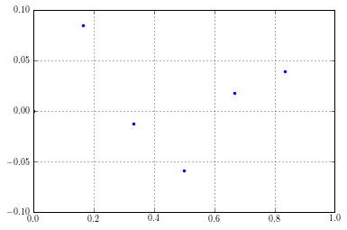

Ho-Kalman Identification Example¶
In [1]:
%load_ext autoreload
%autoreload 2
%matplotlib inline
import control as ctrl
import matplotlib.pyplot as plt
import scipy as sp
import scipy.linalg as la
import vibrationtesting as vt
import scipy.signal as sig
Considers a system
\[ \begin{align}\begin{aligned}\ddot{x} + 2 \dot{x} + 100 x = f(t)\\with a displacement sensor.\end{aligned}\end{align} \]
The state space representation is
\[\dot{\mathbf{z}} = A \mathbf{z} + B u\]
\[y = C \mathbf{z} + D u\]
where
\[\begin{split}A =
\begin{bmatrix}
0&1\\
-100&-2
\end{bmatrix}
,\quad
B =
\begin{bmatrix}0\\1\end{bmatrix}
,\quad
C = \begin{bmatrix}1&0\end{bmatrix}
, \text{ and }
D = [0]\end{split}\]
In [2]:
sample_freq = 1e3
A = sp.array([[0, 1],\
[-100, 2]])
B = sp.array([[0], [1]])
C = sp.array([[1, 0]])
D = sp.array([[0]])
sys = ctrl.ss(A, B, C, D)
For this example, we will generate an impulse response for only 4 discrete times.
In [3]:
t = sp.linspace(0, 1, num = 6, endpoint = False)
dt = t[1]
t
Out[3]:
array([ 0. , 0.16666667, 0.33333333, 0.5 , 0.66666667,
0.83333333])
The impulse response for a second order underdamped system is known to be
\[h(t) = \frac{1}{\omega_d}e^{-\zeta \omega_n t}\sin\left(\omega_d t\right)\]
In [4]:
omega_n = sp.sqrt(100)
zeta = 2/(2*omega_n)
omega_d = omega_n * sp.sqrt(1 - zeta**2)
In [5]:
h = 1/omega_d * sp.exp(-zeta*omega_n*t)*sp.sin(omega_d*t)
h
Out[5]:
array([ 0. , 0.08474903, -0.01254052, -0.05886968, 0.01769677,
0.03956333])
In [6]:
plt.plot(t,h,'.')
plt.axis([0,1,-0.1,0.1])
plt.grid()

In [6]:
Hankel_0 = sp.vstack((h[0:-2],h[1:-1]))
Hankel_0 = Hankel_0.T
Hankel_0
Out[6]:
array([[ 0. , 0.08474903],
[ 0.08474903, -0.01254052],
[-0.01254052, -0.05886968],
[-0.05886968, 0.01769677]])
In [7]:
h[1:-1]
Out[7]:
array([ 0.08474903, -0.01254052, -0.05886968, 0.01769677])
In [8]:
h[2:]
Out[8]:
array([-0.01254052, -0.05886968, 0.01769677, 0.03956333])
In [9]:
Hankel_1 = sp.vstack((h[1:-1],h[2:]))
Hankel_1 = Hankel_1.T
Hankel_1
Out[9]:
array([[ 0.08474903, -0.01254052],
[-0.01254052, -0.05886968],
[-0.05886968, 0.01769677],
[ 0.01769677, 0.03956333]])
In [10]:
U, sig, Vt = la.svd(Hankel_0)
V = Vt.T
U = U[:,:2]
print(U)
V = V[:,:2]
print(V)
[[ 0.56941225 0.57615451]
[-0.59214005 0.56070011]
[-0.32038129 -0.49580091]
[ 0.47169449 -0.32839431]]
[[-0.66563569 0.74627684]
[ 0.74627684 0.66563569]]
In [11]:
sig = sp.diag(sig)
print(sig)
[[ 0.11107284 0. ]
[ 0. 0.0979112 ]]
In [12]:
A_d = la.inv(sp.sqrt(sig))@U.T@Hankel_1@V@la.inv(sp.sqrt(sig))
print(A_d)
[[-0.22322281 0.85303151]
[-0.85967388 0.07525037]]
In [13]:
lam_d, vec = la.eig(A_d)
print(lam_d)
print(vec)
[-0.07398622+0.84324217j -0.07398622-0.84324217j]
[[ 0.12298924-0.69493489j 0.12298924+0.69493489j]
[ 0.70847664+0.j 0.70847664-0.j ]]
In [14]:
# This should be the same as A_d
print(A_d)
print(vec@sp.diag(lam_d)@la.inv(vec))
[[-0.22322281 0.85303151]
[-0.85967388 0.07525037]]
[[-0.22322281 +0.00000000e+00j 0.85303151 +2.77555756e-17j]
[-0.85967388 -6.93889390e-18j 0.07525037 +0.00000000e+00j]]
In [15]:
lam = sp.log(lam_d)/dt
lam
Out[15]:
array([-1.+9.94987437j, -1.-9.94987437j])
In [16]:
# These are the continuous time eigenvalues
print('The undamped natural frequency is {} rad/sec.'.format(abs(lam[0])))
print('The damping ratio is {}.'.format(-sp.real(lam[0])/abs(lam[0])))
The undamped natural frequency is 10.0 rad/sec.
The damping ratio is 0.09999999999999998.
The identified state matrix is
In [17]:
A = la.logm(A_d)/dt
print(A)
[[ -2.76092394 10.06538424]
[-10.1437611 0.76092394]]
which is the system the result in a balanced realization form.
In [18]:
# The discrete input matrix is
B_d = sp.sqrt(sig)@V.T[:,0].T.reshape((2,1))
print(B_d)
[[-0.22184035]
[ 0.23351573]]
In [19]:
# The continuous input matrix is
B = la.solve((A_d - sp.eye(2)), A) @ B_d
print(B)
[[-2.58036274]
[-0.22677789]]
In [20]:
C = (U @ sp.sqrt(sig))[0,:]
print(C)
[ 0.18977139 0.18028315]
In [21]:
# Of course, D is
D = h[0]
D
Out[21]:
0.0